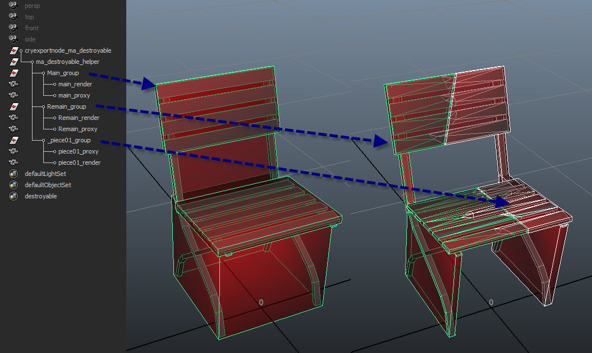
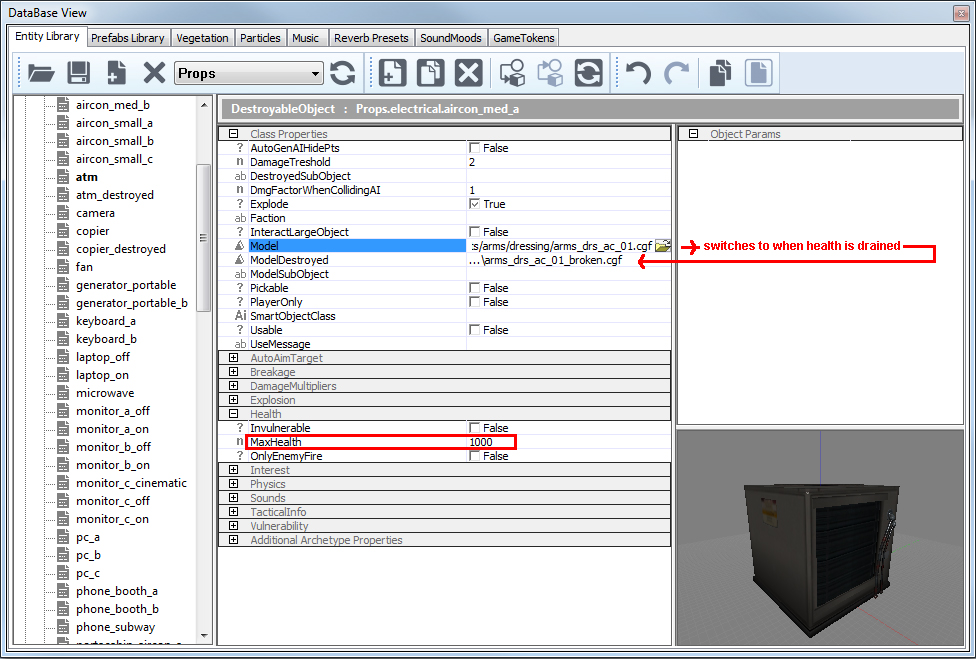

Образец файла
Разрушаемые объекты
Разрушаемые объекты — это структуры, содержащие исходный объект и заранее созданные части, которые появляются при уничтожении исходного объекта. Его установка аналогична шарнирный хрупкий но здесь не используются кости. Вместо этого он использует модель в целостном состоянии и части в сломанном состоянии, встроенные в один cgf. Его можно использовать для полного уничтожения определенных типов объектов в окружающей среде. Он разбивается на заранее созданные части, получая больше урона, чем указанное свойство «здоровья» объекта. Он размещается с помощью DestroyableObject Сущность в двигателе.
DestroyableObject может находиться в двух состояниях: «Живом» и «Мертвом». В «Живом» состоянии он действует точно так же, как обычный физический объект. Его можно настроить как твердое тело или физический объект static. После получения большего урона, чем указанное «здоровье», он перейдет в мертвое состояние. При переходе в мертвое состояние он может дополнительно сгенерировать физический взрыв и нанести урон по площади окружающим объектам, вызвать эффект частиц (например, взрыв) и заменить исходную геометрию объекта либо разрушенной геометрией, либо предварительно сломанными частями исходной геометрии. Если объект ломается из-за удара (пули), этот импульс удара применяется к частям в дополнение к любому взрывному (наружному) импульсу.
Настройка разрушаемых объектов
- Создайте свой объект с помощью физической геометрии, LOD и помощник по пикапу если необходимо.
- Дублируйте вашу рендер-сетку. Разрежьте его на необходимое количество частей (будьте разумны — это может довольно быстро стать дорогим. 8 частей должно быть достаточно для большинства объектов, чем меньше объект, тем меньше частей вам нужно).
- Создайте LOD и коллизию для своих фигур.
- Назовите свой непрерывный кусок главный и назови свои обломки remain_xx (хх=01,02,03 и т. д.).
- Введите массу а UDP к основной детали и введите массу и сущность UDP к твоим осколкам. Масса ваших сломанных кусков в идеале должна равняться массе вашего основного, целого куска.
- Отцентрируйте все повороты для вашего помощника по экспорту.
- Экспорт с отключением объединения всех узлов и включением экспорта файла для каждого узла.
- Поместите разрушаемый объект как объект DestroyableObjects в редактор, настройте правильные ценности и застрели его. Теперь он должен сломаться.

Использование плоских cgfs без закладных частей
Вместо встраивания частей в один файл cgf, вы можете создать два разных файла cgf. Один в неразрушенном состоянии, другой в разрушенном.
Поместите объект как уничтожаемую объектную сущность и укажите cgf и значение работоспособности. Он переключится, когда объект получил больше урона, чем указано в значении здоровья.
Если ничего не указать на вкладке ModelDestroyed и не использовать cgf со встроенными частями, объект исчезнет, когда здоровье истощится.

После того, как вы создали cgf(s) разрушаемого объекта, добавьте эффект частиц, значения здоровья и эффекты взрыва. я использовал Реквизит.электрический.aircon_med_a на скриншоте примера.
Общие правила
Для объекта необходимо создать CGF, содержащий фрагменты сломанного объекта в качестве подмоделей. В зависимости от того, как вы хотите его настроить, CGF также может содержать основную неразрывную модель в качестве отдельной подмодели. Каждая подмодель также должна иметь прокси-геометрию физики.
Имя и текстовые свойства подмодели определяют ее поведение следующим образом:
- Объект должен состоять из основной исходной части с именем Main, которая будет действовать как живая геометрия. Это (единственная) подмодель до разрушения.
- Он также должен состоять из уничтоженной геометрии с именем Remain, которая заменит исходную геометрию и будет действовать как мертвая геометрия. Это постоянная подмодель после разрушения, которая заменяет Main. В противном случае это кусок разрушения.
- Он должен состоять из разных частей, которые будут порождаться как частицы или сущности.
- Каждая часть должна иметь физический прокси.
- Ориентация в мировых координатах должна быть 0/0/0 (см. раздел «Отладка»).
- Включите OFF «Объединить все узлы» при экспорте.
- Объекты должны быть размещены как разрушаемые объекты.
- Местоположение появления: по умолчанию детали появляются в том положении, в котором они размещены в CGF, относительно исходной модели. Следующие свойства текста изменяют это поведение:
- кость = имя: (Только для персонажей с разрушаемой кожей) — это имя кости, к которой прикреплен этот кусок. Начало координат подмодели будет размещено в начале координат кости, а ось X подмодели будет совмещена с направлением кости.
- generic = count: это приводит к тому, что деталь появляется несколько раз в случайных местах по всей исходной модели. Счетчик указывает, сколько раз он создается. Универсальных деталей может быть несколько.
- sizevar = var: для общих частей это рандомизирует размер каждой части по шкале от 1-var до 1+var.
- rotaxes axes: для обычных частей генерирует случайное вращение. Установите это для буквы оси; например, =z или xyz, чтобы деталь вращалась случайным образом вокруг выбранной локальной оси/осей. Если не установлено, части будут появляться в заданном ими порядке.
- объект: если этот параметр установлен, фрагмент создается как постоянный объект. В противном случае он порождается как частица.
- плотность (плотность или = масса) = масса: это переопределяет плотность или массу детали. В противном случае используется та же плотность, что и у всего объекта.
- Настройка материала поверхности: важно убедиться, что каждая деталь имеет соответствующий тип поверхности (например, дерево или лед), поскольку она используется для создания вторичных эффектов разрушения.
Обычный CGF, содержащий только одну подмодель, также может быть уничтожен. Его модель исчезнет, но если материал поверхности модели задает эффект разрушения, она появится. Для персонажей с разрушаемой кожей CGF не должен содержать основные или оставшиеся части; только «костяные» и «обычные» куски.
Создание выбираемых разрушаемых объектов
Настройка для того, чтобы сделать ваш разрушаемый объект доступным для выбора, довольно проста. Обратитесь к Выбираемые объекты документацию для получения дополнительной информации.
Эффекты вторичных частиц
Когда объект ломается, по умолчанию автоматически создаются эффекты вторичных частиц в зависимости от типа материала поверхности каждой детали. Эффекты считываются из сценария материала, и можно указать два типа эффектов:
- поломка.particle_effect: Это определяет эффект, который будет появляться на каждом сломанном куске материала этого типа, вокруг его краев.
- уничтожить.particle_effect: Это определяет эффект, который будет появляться по всему непрерывному объему объекта в точке его уничтожения. Этот эффект полезен для уничтожения простых объектов, не состоящих из CGF. Объект исчезает и заменяется уничтожением.particle_effect. Однако эффект разрушения также можно использовать вместе с эффектами разрушения.
Устранение неполадок
Вопрос: Объект не ломается.
О: Проверьте значение работоспособности вашего объекта Destroyable. Проверьте свой объект на предмет правильного использования соглашений об именах (main, remain_xx). Убедитесь, что каждая деталь имеет свою собственную геометрию столкновения.
Вопрос: Объект не порождает частей или они появляются в неправильных позициях.
О: Установите все повороты в помощнике экспорта и сбросьте преобразования.
Вопрос: Детали дрожат, когда их ломают.
A: Части физической геометрии пересекаются друг с другом. Убедитесь, что между столкновениями есть промежутки.
Свойства
Пожалуйста, ознакомьтесь с Выбираемые объекты документ для получения информации о размещении DestroyableObject и значениях их свойств.